Esta es de las primeras fotos donde puedo decir que ya tenía sentmientos encontrados. Además en esta foto nos
vemos muy bien JAJJAJAJA. Me gusta mucho.
Una Buena Noche
Esta foto es muy especial para mí, ya que ese día/noche pude bailar contigo, ahí debo decir que realemente
fui más a la fiesta por ti,
tenía ganas de poder verte y bueno, el poder bailar contigo me dejo muy marcado, además del avioncito.
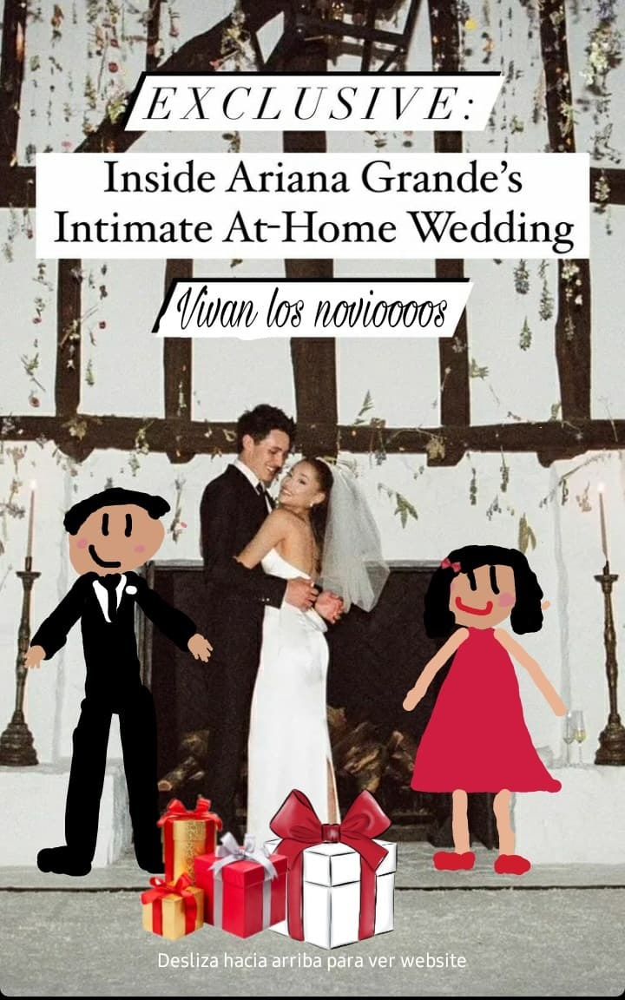
Nosotros en la Boda de Ariana
JAJAJAJAJ, esta foto se describe solita, me da gracia el como estamos ahí en la foto
perooooo, debo decir que tu dibujo quedo demasiado bien, me gusta demasiado como nos retrataste, así que
por eso tiene un lugar aquí esta imagen.
Nervios...
Esta foto realmente es la primera qeu tenemos donde ambos ya sabíamos lo que sentiamos el
uno por el otro, por ello, es muy especial ya que es de las veces en que estuve muy nervioso
al ser la primer vez que te iba a ver y ya sabías lo que sentía por ti, me daba miedo
el saber como me verías o si podía hacer algo mal.
Fiesta de Pach
Igual que la pasada, fue en la fiesta de Pach esta foto, y debo decir que me parece bien colocarla debido a
que
ahí decían ya nuestros amigos que estabamos raros, que nos veían mas juntos de lo normal, incluso
la mamá de Pach JAJAJAJ, y bueno, al parecer eramos muy obvios.
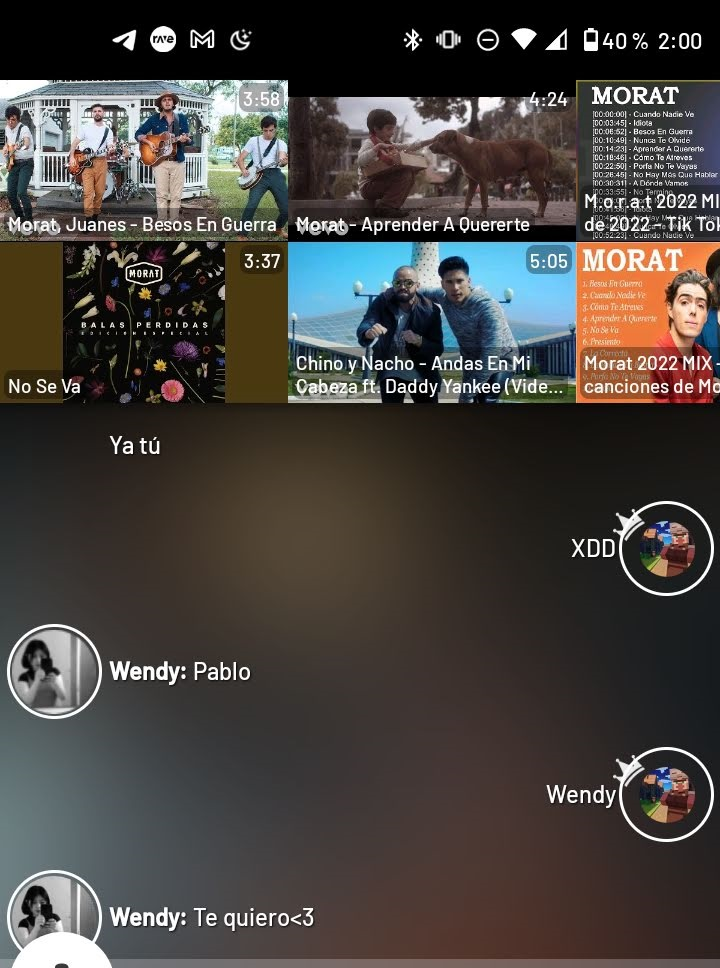
Una de las 1ras Veces
Esta capturada de pantalla retrata realmente una de las primeras veces que me dijiste algo "lindo" dentro de
nuestra relación
(porque según yo, ahí ya teníamos algo), en ese momento sentí muy bonito el poder
leer que me pusiste "Te quiero" y cada vez que me lo dices, realmente siento muy bonito.
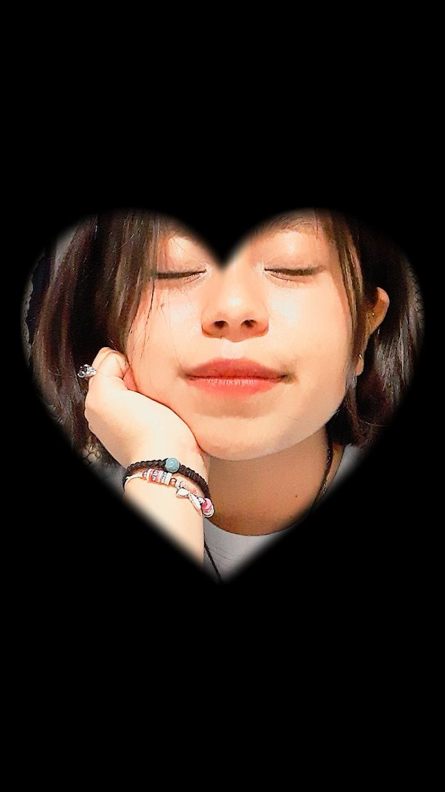
Tú, tu foto
Esta foto es muy especial ya que fue de las primeras fotos que me mandaste siendo novios y bueno, creo que el
poder
llegar a esa etapa donde ya empezabas a mandarme fotos tuyas fue de lo mejor que me ha pasado, realmente
me gustan muchísimo tus fotos, podría decir que son mi colección mas preciada c:.
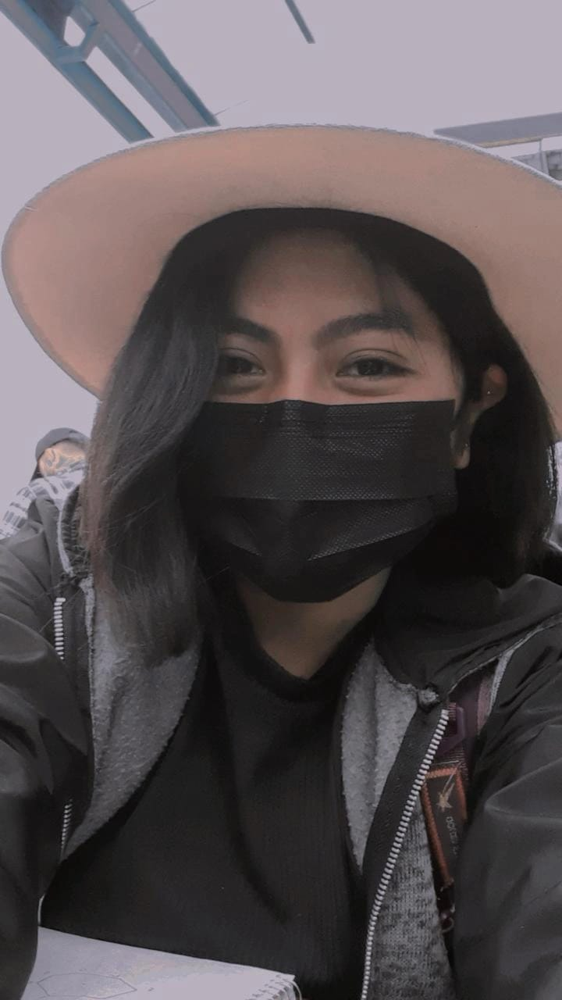
Tú con sombrero
Esta foto me gustaaaa muchooo, siento que te ves muy natural y muy tú, además era de las primeras
veces que te ví con un sombrero así y podría decir realmente que me gusta como te vistes
y te ves, eres muy bonita.
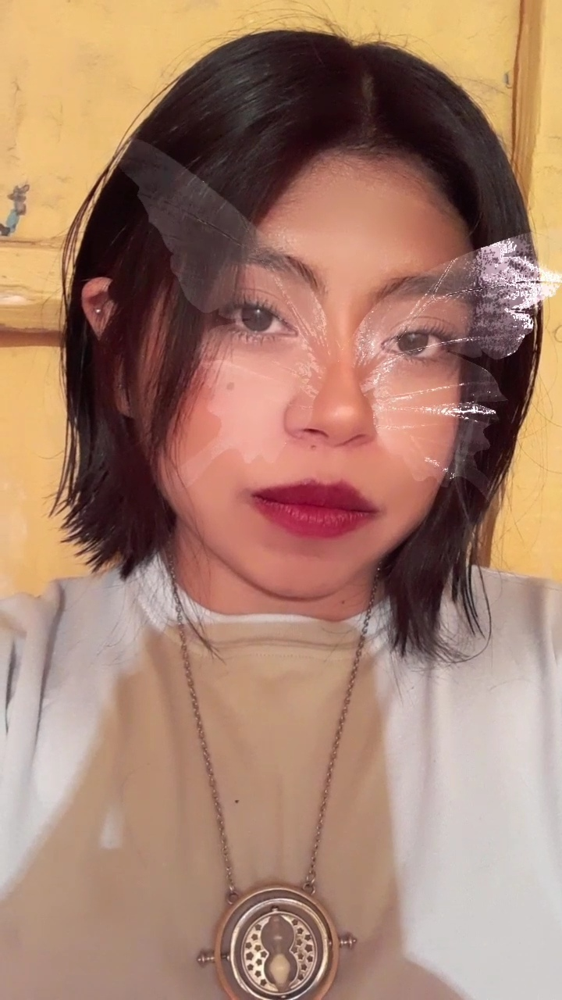
¿Por que hay tanta belleza aquí?
Esta foto es especial debido a que recuerdo que fue por Navidad, y dije "OJOOOOOOOOOOOO", nambre
te ves mu bonita, me gustó mucho y me sigue gustando el como te ves en esta foto, además creo que te queda
muy
bie ese filtro de mariposa.
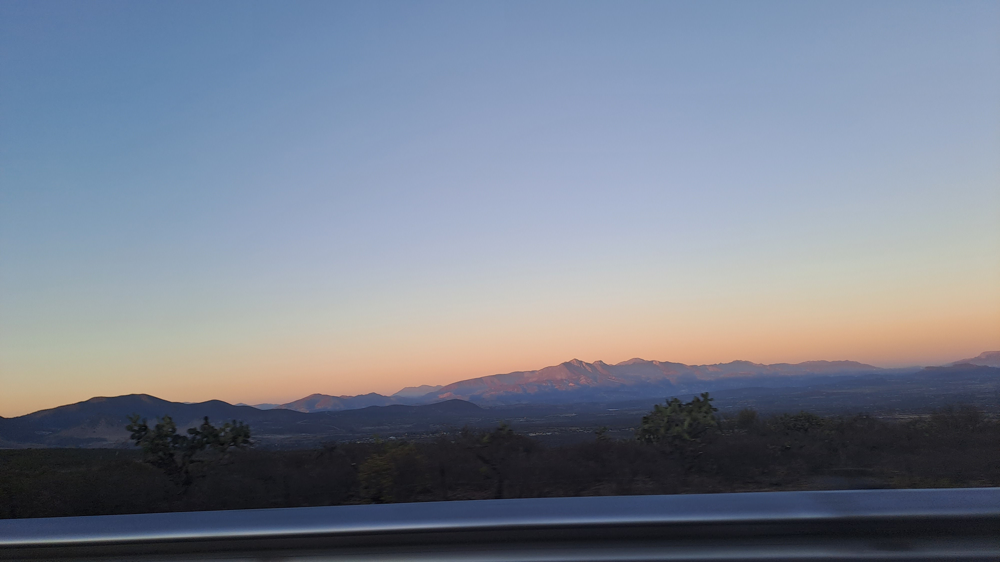
Un atardecer...
Está imagen trae mucho conexto debajo de ella pero, quiero resumirlo en que con ese atardecer empecé
a pensar mucho en ti, y con ello cada atardecer qeu veo ahora, me recuerda siempre a ti, eres como un cielo
en el
atardecer así, con colores tranquilos, despejado que me causa mucha paz y seguridad, así me haces sentir.
Tu Bienvenida
Esa imagen fue cuando entraste a un mundo donde jugaba con Karina y no sé, me da felicidad que al final de
todo, pueda compartir muchas
cosas que me gustan contigo, como jugar Minecraft, y estoy seguro que algun otro juego tambien lo jugarías
conmigo, al final eres parte de mí ahora
y puedo decir qeu me agrada muchisimo el saber que tengo a alguien con quien compartir todo, sin esperar que
me crítique o no le parezca bien.
POV
Realmente esta imagen pues creo es una de las especiales JAJAJ. Podemos ver tu punto de vista
del como veías donde estaba sentado peero, pues fue cuando conociste mi casa y todo fue muy "imprevisto"
para ambos,
ya que realmente no lo planeamos pero se dió y bueno, que puedo decir, el poder desyaunar contigo y haber
tenido 'esa' experiencia
fue muy interesante realmente y me gusto, al final creo que ese día es de los pocos que jamás se me
olvidarán de nuestra historia.
PD: Que se repita xd.
Tú y Yo
No hay descripción mas concreta que poder observar que tienes unos ojos muy bonitos, realmente yo creo
que son muy especiales, además pues, el poder tener fotos contigo ya me hace muy feliz.
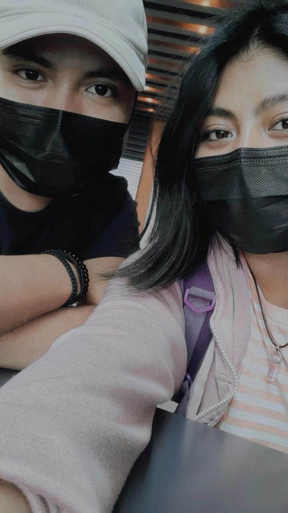
Explanadaaaa
Esta foto fue de una vez que fuimos a explanada, y realmente la única JAJAJA, es muy bonita porque de hecho,
ese día fue de las primeras veces que ya nos empezabamos a tomar fotos y sentí muy bonito el poder tomarme
fotos contigo.
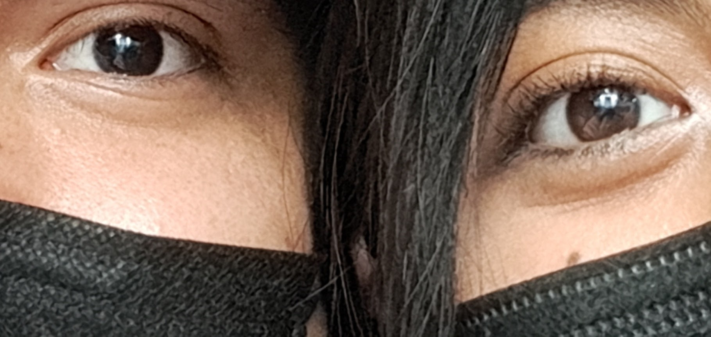
Nuestros Ojos c:
Owwww, si están muy bonitos tus ojos. Podemos ver claramente que tus ojos son mas claritos que los míos,
peeero
no quiero ver otros ojos que no son los tuyos. Diría que son de las fotos que mas me gustan por el hecho de
que
aunque no sale tu carita, aún te sigues viendo muy bonita.
Los Sonrientes
Esta es otra foto que nos sacamos en Explanada y bueno, no es la más chistosa pero con esa podrías recordar
las demás fotos, además, ese
día pude conseguir un video tuyo dandome un besito JAJA, fue un gran premio.
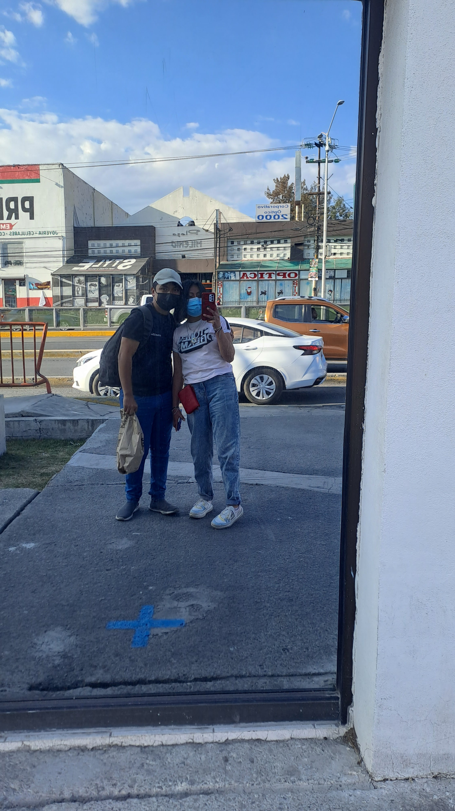
Foto en Banamex
Esta foto fue tomada en el banco que está casi por Prepa 1 y es especial porquee recuerdo que ambos teniamos
pena
por tomar la foto, ya que los del banco si podían vernos pero nosotros a ellos no JAJAJA, entonces queríamos
tomar la foto rápido.
Me parece una hisotria muy bonita la verdad JAJAJ, y la foto igual salió bonita y, aunque intente ocultar la
bolsa de pan, claramente al fnal no se pudo y ya dejé
que se viera.
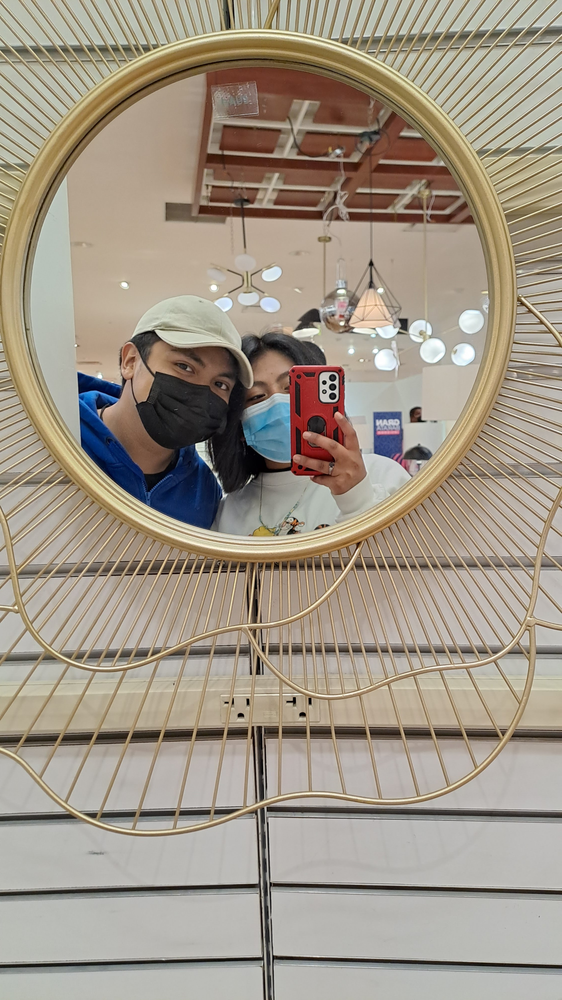
Mi Portada Favorita
Creo y estoy muy seguro que esta foto es la primera que nos tomamos ya siendo novios. Me hizo Mucha ilusión
el poder tomarme esta foto contigo, ya que sentía que con esto podíamos ser mas unidos cada vez, aún recuerdo
que esta foto fue tomada en Liverpool y solo estabamos viendo las cosas hasta que llegamos a la parte de los 'espejos'
y nos tomamos esta foto. En fin, le tengo mucho aprecio a estas fotos c:
.
Modo Incognito
Bueno, este fue el segundo espejo que vimos en Liverpool JAJJAJAJ. Pero esta foto me gusta más ya que igual pude acercarme más a ti ya que antes no lo hacía tanto.
Me gusta por el hecho de que tú eras la que tomabas las fotos y bueno, me gusta como tomas las fotos en general, además que sip te ves bonita en todas, te hace lucir bien. Ademaas, esa vez
llevaste esa sudadera porque te había dicho, ya que me la habías enseñado creo en otra foto y bueno, recuerdo que la lavaste por mí oww.
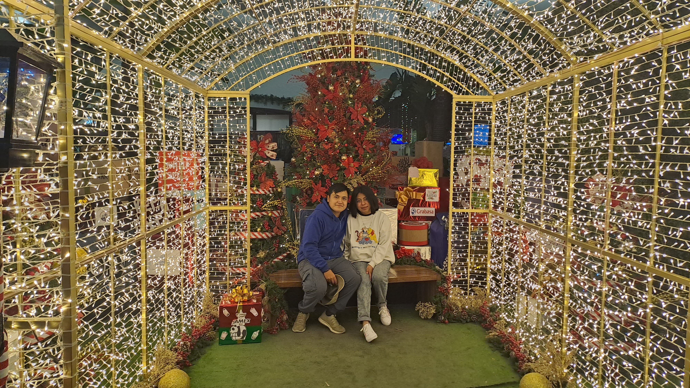
Feliz Navidad
Owwww, que bonita fotooo. A pesar de que en ese momento me dió pena
el pedirle a un señor que nos tomara la foto, creo que al final valió la pena. En realidad
hoy puedo decir que me da mucha menos pena pedirle a alguien cosas por ti, por ejemplo, me daba mucha
pena el pedir las cosas en Dulceria en el cine peero, ahora si es para pedir cuando salimos, ya se me ha ido perdiendo
dicha pena. Al final esta foto marca una etapa importante en muchos sentidos.
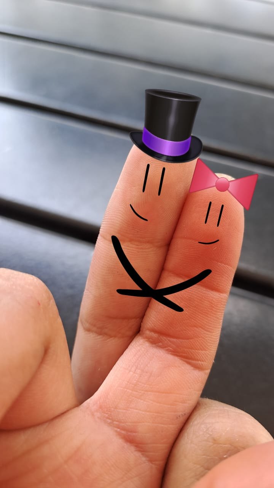
Dedos W
Esta imagen realmente me pone a recordar un poco como en algún momento de mis
vacaciones podía ir contigo seguido a tu escuela. Ese día fue uno donde esperabas durante
3 horas a que comenzara tu clase de inglés. En fin, puedo decir que siempre valdrá la pena el poder
verte aunque sea unos minutos o unos segundos.
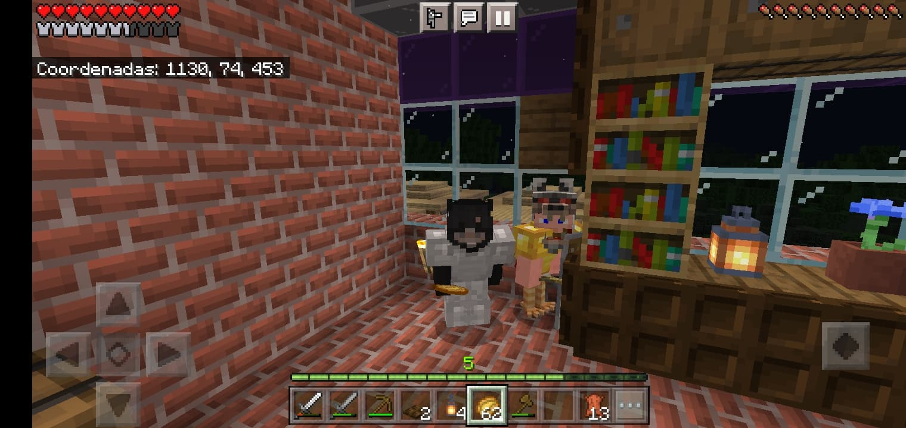
Mood Dormido
JAJAJAJ, supongo fue una de esas veces en las que estaba muy cansado y lo
curioso aquí es que según ese día tu tenías ya un poquito de sueño y según yo nada, peeeeero
el que se qeudó dormido fui yo y aprovechaste para ponerme en ese lugar de nuestra casita y tomarte
una foto. PD. Me gusta mucho como decoraste la casa.
Atardecer especial
Podrás decir "Vaya, otro atardecer" peero, ese atardecer fue muy especial para mí.
Fue un atardecer después de mi cumpleaños y bueno, días antes te había visto y me diste un regalo. Realmente esas
cosas me hacen sentir muy especial para ti porque bueno, el hecho de que te acordaras y celebraras conmigo me hace sentir muy feliz
y especial. Ese atardecer fue cuando estaba ya de regreso a la Ciudad de México, saliendo de Pachuca, y puedo decir Que
me quedó marcado el hecho de que no quisiera irme realmente y que hubiera preferido quedarme contigo al menos unos días más porque al final,
nunca me es suficiente el tiempo que tengo contigo.
Sin contexto
JAJAJAJAJA, está imagen la pongo porque me da risa y bueno, realmente no necesita contexto.
Quiza de hecho esta imagen puede estar ligada a una que ya pasó y es el mismo contexto.
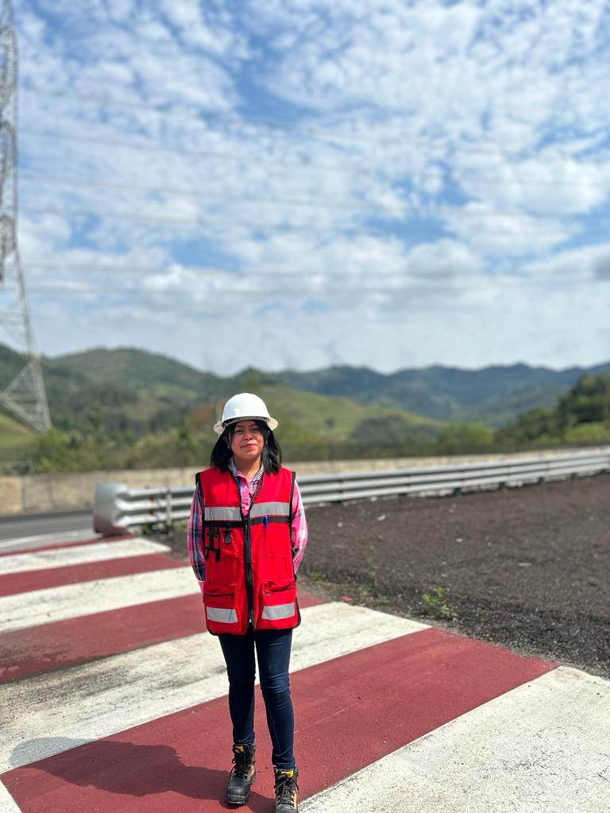
Mi ingeniera :3
Owwwww, nunca es malo recordar que tengo a mi novia ingeniera que además de ser muy pero muuy
inteligente, es muy guapa y esta foto lo retrata. Sé que podrás llegar a cumplir todas tus metas y sueños,
realemente espero lo mejor para ti en esta vida y que mejor el poder ver qeu cumples todo eso que seguir contigo
compartiendo esos momentos, espero poder estar ahí para verlos porque siempre me hará feliz el hecho de que logres
tus sueños, llegues lejos y sobre todo, el que puedas tener todo lo que alguna vez anhelaste.
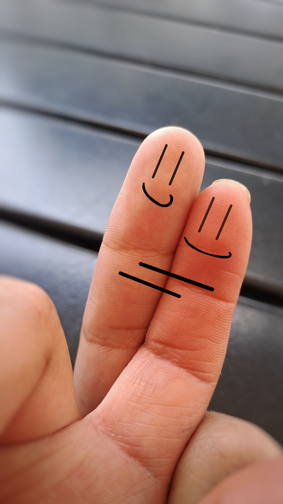
Dedos P
Esta es la parte 2 de la Imagen que lleva por título "Dedos W". Bueno, aquí puedo decir
que realmente la que gano el concurso fuiste tú, se ve como le pusiste mayor empeño y al final
fue un muy buen resultado.(¿Recuerdas cuál dedo es de quién?).
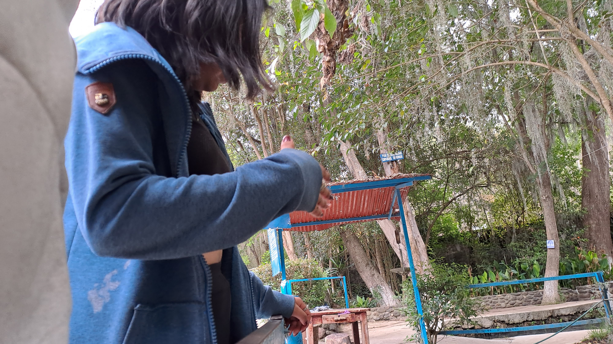
Distraida
Owwwww, hemos llegado a una de mis favoritas. Si no lo recuerdas, ese día fue cuando nos escapamos a Huasca
y fuimos a pasear al "Bosque de las Truchas" donde pudimos hacer varias cosas. Quizá nos falto hacer algunas otras más
pero podemos ir en el futuro nuevamente. ¿Por qué esta foto es de mis favoritas? Porque no te diste cuenta que la tomé, estabas
alimentando a las Truchas que había por ahi en una sección, donde había unas truchas discapacitadas xd, y aproveche el llevarme
una foto del momento, ya que me gustó mucho verte dandoles de comer, te veías muy bonita y tiernaa.
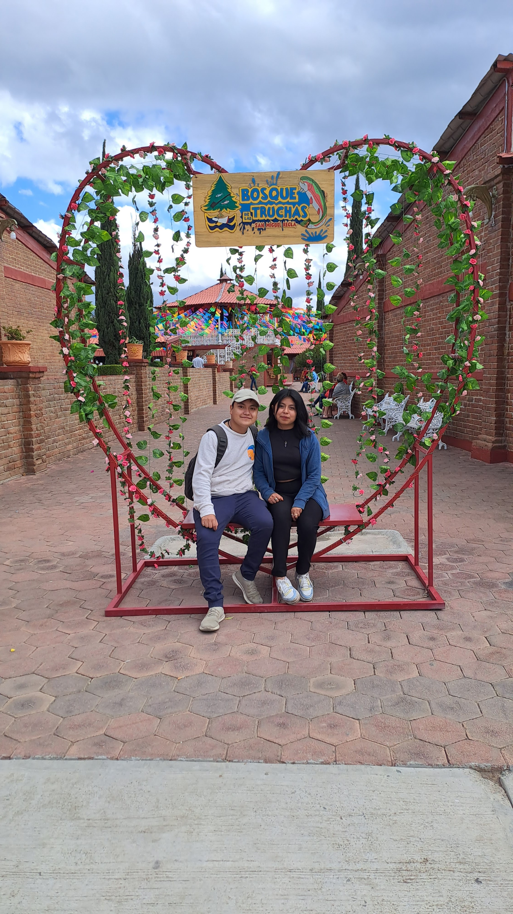
Bosque de las Truchas
Bueno, como dice el título, cuando ya nos ibamos a ir y vimos esto, claro que teníamos que tomarnos una foto del
recuerdo y es esta. Ojito que podemos apreciar como ibas con un muy buen outfit y que te veías muy guapa como siempre.
Creo igual es de las fotos mas bonitas que tenemos bajo todo el contexto que conlleva y que ha sido de las salidas
mas especiales a mi punto de vista, ya que ha sido lo mas lejos que hemos viajado hasta ahora.
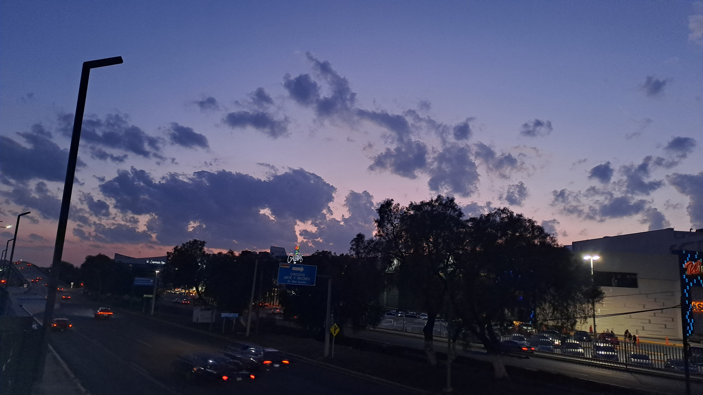
Revelación en Galerias
Esta imagen es muy importante o al menos especial. Es la foto que publiqué en una historia de
Instagram donde igual tú pusiste una foto muy similar para que se tuviera algo tensión en el momento, ya que
no todos nuestros amigos sabían aún de lo nuestro. Además sin quererlo, retrata el color de los atardeceres que me recuerdan
muchísimo a ti.
Mi pasatiempo favorito
Esta foto retrata mi pasatimepo favorito, quizá es algo obvio pero nunca es malo volverlo a poner.
Mi pasatiempo favorito siempre será cualquier cosa que te involucre, ya que siempre quiero compartir muchisimas sino es que todas contigo,
además, me divierte el ir a jugar a Happyland contigo y más si se trata de ir a los Carritos Chocones, recuerdo que una vez rompí la mica de
tu teléfono, pido una disculpa por eso JAJA.
Invitación
Owww, esta es de la vez que me invitaste al evento de tu escuela y bueno, hice todo lo posible por poder llegar a verte y no fallar en el
intento. Por un momento creía que llegaría tarde porque ese día en la carretera me tocó una manifestación y habían bloquedado
los carriles de la misma. Al final de todo pude llegar a verte y fue un día muy especial en el que
pude bailar contigo mucho y sobre todo pasarmela bien. Ademáaaas, ese día esta marcado igual porque es la primera vez que ví con short.
En el Tec
Este video igual fue durante el periodo que podía verte muy seguido e iba a tu escuela un ratito.
A pesar de quizá no ser la gran cosa el video a primera vista, tiene importancia para mí por recordarme esos momentos.
Nuestras Iniciales
Hemos llegado a mi fondo de Pantalla JAJAJ. Owww, aún sigo enamorado por esto ya que al final creo este es el tipo de cosas
que me gustan mucho, esos pequeños detalles que hacen la diferencia y los que me hacen enamorarme más y más de ti. A pesar de estar lejos (mucho) ese día
pudiste aprovechar eso y darme ese detalle el cual lo agradezco demasiado.
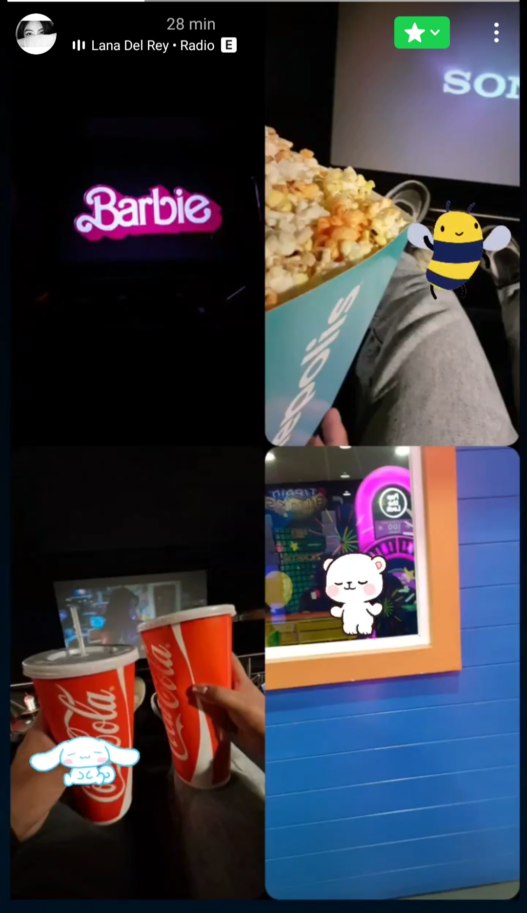
Instagram
Hemos llegado al final de esta galería resumida. Sin embargo, esta imagen es a la que le tengo mas
cariño hasta ahora ya que retrata en una historia lo que en un día vivimos. Espero de todo corazón el poder
pasar por muchas mas cosas contigo y el poder seguir haciendote feliz durante muchos años más, espero que este
aniversario sea solo el principio de los que faltan por vivir, gracias por todo lo que he vivido contigo y por llegar
a mi vida. Te amo muchooo, no lo dudes jamas.